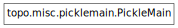

topo.misc.picklemain¶

Module¶
Extensions to pickle allowing items in __main__ to be saved.
- class topo.misc.picklemain.PickleMain[source]¶
Bases: object
Pickle support for types and functions defined in __main__.
When pickled, saves types and functions defined in __main__ by value (i.e. as bytecode). When unpickled, loads previously saved types and functions back into __main__.
- topo.misc.picklemain.save_classobj(self, obj)[source]¶
Save an interactively defined classic class object by value
- topo.misc.picklemain.save_function(self, obj)[source]¶
Save functions by value if they are defined interactively
- topo.misc.picklemain.save_global_byname(self, obj, modname, objname)[source]¶
Save obj as a global reference. Used for objects that pickle does not find correctly.
- topo.misc.picklemain.save_module(self, obj)[source]¶
Save modules by reference, except __main__ which also gets its contents saved by value
- topo.misc.picklemain.save_module_dict(self, obj, main_dict={'__builtins__': <module '__builtin__' (built-in)>, '__file__': '/usr/bin/sphinx-build', '__package__': None, 'sys': <module 'sys' (built-in)>, '__name__': '__main__', 'main': <function main at 0x2ad2b15f05f0>, '__doc__': '\n Sphinx - Python documentation toolchain\n ~~~~~~~~~~~~~~~~~~~~~~~~~~~~~~~~~~~~~~~\n\n :copyright: Copyright 2007-2011 by the Sphinx team, see AUTHORS.\n :license: BSD, see LICENSE for details.\n'})[source]¶
Special-case __main__.__dict__. Useful for a function’s func_globals member.